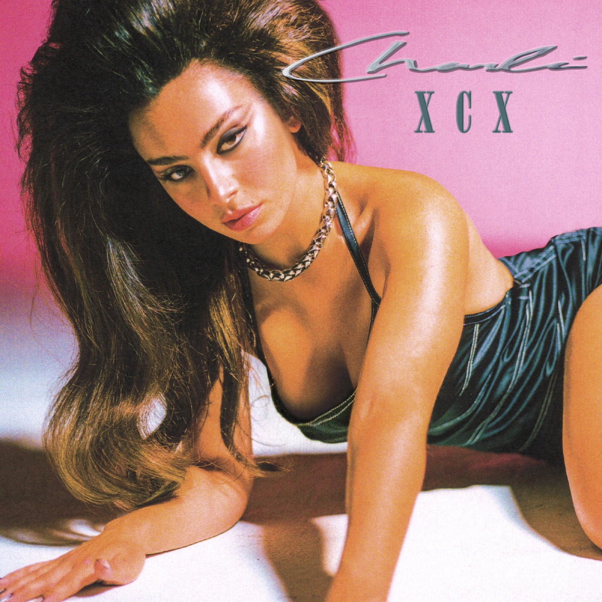
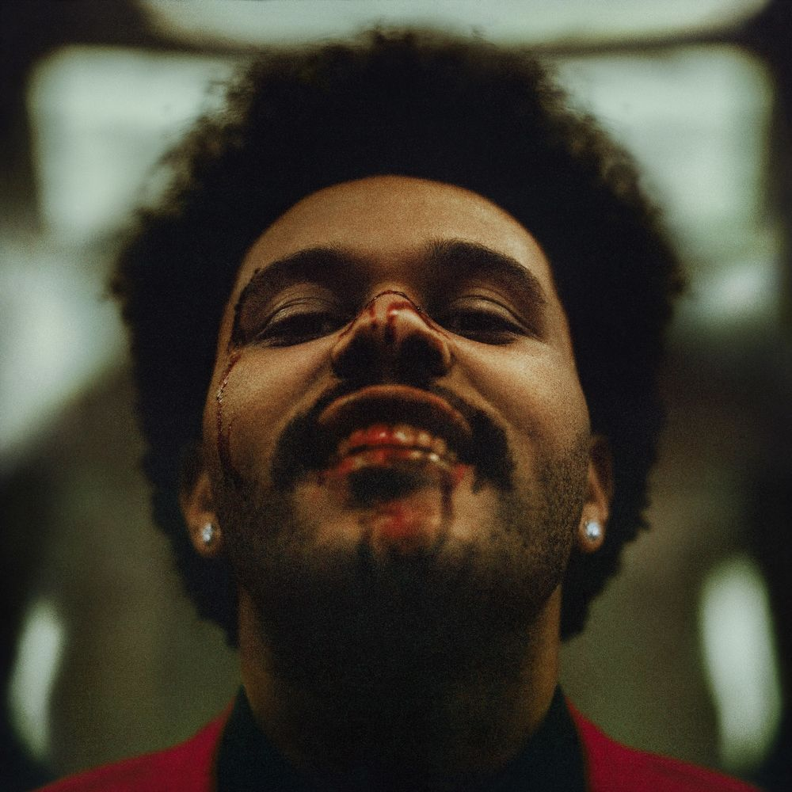

💕 YOZM MANI DTNEON NORAE💕

♪ Ain't Shit_Doja Cat ♪
Man
This happened one, two, three times too much
These dumb-ass niggas
Niggas ain't shit, come up in your crib
All up in your fridge, can't pay rent
Look at what you did, listen to your friends
When they say, niggas ain't shit, 'cause
Niggas ain't shit, come up in your crib
All up in your fridge, can't pay rent
Look at what you did, listen to your friends
When they say, niggas ain't shit, 'cause
You can say that again
Niggas is square like Madison
I can't even really get mad at them
They fall, then I gotta facepalm
Shook him like an 8-ball and it's embarrassing
Ten-page text, should've wrote a book, could've made a bag
But he broke and he still waiting 'til I can chill
And he really think I'ma get back to him
Doing too much, relax a bit
Acting like that 'cause your dad's a bitch
Must be the way that the planets is
Must be your face 'cause it's not your dick
I'm a freak, not a masochist
Should've known you had the baddest bitch
Left on read and can't give head
Really, you ain't shit, need a laxative
Niggas ain't shit, come up in your crib
All up in your fridge, can't pay rent
Look at what you did, listen to your friends
When they say, niggas ain't shit, 'cause
Niggas ain't shit, come up in your crib
All up in your fridge, can't pay rent
Look at what you did, listen to your friends
When they say, niggas ain't shit, 'cause
Said that's not cheating if I wasn't with your ass, yo
You kept secrets and your cousin told me that, so (your cousin)
Logical thinking is just something that you lack, so
What you even mad for? Looking like a stick up in your asshole
I'm not your mommy, nigga, find a new hobby, nigga
Return, yo, 'fore I get picked up, your shit's in the lobby, nigga
I'm not gon' key your car, I'll call your fucking mom
You should have paid my rent, go get a fucking job
Niggas ain't shit, come up in your crib
All up in your fridge, can't pay rent
Look at what you did, listen to your friends
When they say, niggas ain't shit, 'cause
Niggas ain't shit, come up in your crib
All up in your fridge, can't pay rent
Look at what you did, listen to your friends
When they say, niggas ain't shit, 'cause

♪ Good Ones_Charli XCX ♪
I wish you gave me a reason
That you were better at leavin'
That you got your kicks from seeing me low
I always let the good ones go
Don't want the kisses, unless they're bitter
I'm hooked on touches that leave me weaker
I swear that I love nothing more than broke
I always let the good ones go
And baby, you couldn't have loved me any better
But doin' this is all that I've known ever
I want the bad ones, 'cause they're all I know
I always let the good ones go
I always let the go, ooh-ooh-ooh-ooh-
I let the good ones go, ooh-ooh-ooh-ooh-
I let the good ones (go)
Let you down easy, I'm trying
'Cause you're everything I've spent my whole life fighting
So when I walk away, it's not your fault
I always let the good ones (ones), go (go)
And baby, you couldn't have loved me any better
But doin' this is all that I've known ever
I want the bad ones, 'cause they're all I know
I always let the good ones go
I always let the good ones go, ooh-ooh-ooh-ooh- (oh, oh)
I let the good ones go, ooh-ooh-ooh-ooh- (yeah, yeah)
I let the good ones go, ooh-ooh-ooh-ooh-
(And baby you couldn't have loved me any better, better, better)
I let the good ones go, ooh-ooh-ooh-ooh-
(But doin' this is all that I've known ever, ever, ever)
I let the good ones go

♪ Save Your Tears_The Weeknd ♪
Ooh
Na-na, yeah
I saw you dancing in a crowded room
You look so happy when I'm not with you
But then you saw me, caught you by surprise
A single teardrop falling from your eye
I don't know why I run away
I'll make you cry when I run away
You could've asked me why I broke your heart
You could've told me that you fell apart
But you walked past me like I wasn't there
And just pretended like you didn't care
I don't know why I run away
I'll make you cry when I run away
Take me back 'cause I wanna stay
Save your tears for another
Save your tears for another day
Save your tears for another day
So, I made you think that I would always stay
I said some things that I should never say
Yeah, I broke your heart like someone did to mine
And now you won't love me for a second time
I don't know why I run away, oh, girl
Said I'll make you cry when I run away
Girl, take me back 'cause I wanna stay
Save your tears for another
I realize that I'm much too late
And you deserve someone better
Save your tears for another day (ooh, yeah)
Save your tears for another day (yeah)
I don't know why I run away
I'll make you cry when I run away
Save your tears for another day, ooh, girl (ah)
I said save your tears for another day (ah)
Save your tears for another day (ah)
Save your tears for another day (ah)